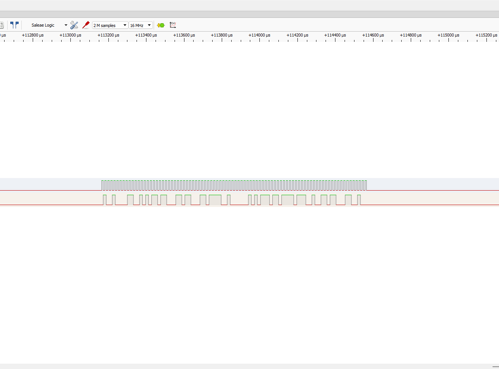
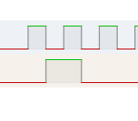

After getting GPIO and external interrupts working on the STM32F407 I moved on to serial communication. For this test I configured the STM32's SPI2 peripheral and transmitted "Hello World" using my own SPI driver. I then connected a logic analyzer to verify what was actually happening on the physical pins.
"Hello World" is obviously not the final purpose of the SPI driver but gives me something much more useful at this stage of the project: a known sequence of bytes that I can transmit and compare against a physical measurement.
Rather than connecting another SPI device immediately I wanted to validate the STM32 side first. That means checking the GPIO configuration and then the SPI peripheral configuration. Next clock generation and transmitted data, before adding another piece of hardware to the system.
Moving From GPIO to Serial Communication
My previous test focused on GPIO and interrupts. A button changed the electrical state of an input pin, the STM32 detected the event through the EXTI peripheral and an interrupt service routine toggled an LED.
SPI introduces another level of complexity; instead of interpreting a single HIGH or LOW state the microcontroller uses coordinated clock and data signals to transfer a sequence of bits between devices.
The Hardware Test Setup
I connected the logic analyzer directly to the STM32F407 so I could observe the signals produced by SPI2.

For this transmit only test the two important signals are SCLK and MOSI. The STM32 is acting as the SPI master so it generates the clock and places outgoing data onto MOSI.
PB13 → SPI2 SCLK
PB15 → SPI2 MOSI
Logic Analyzer GND → STM32 GND
MISO is not needed for this particular test because nothing is being transmitted back to the STM32. The purpose here is specifically to validate the transmit path.
Giving SPI2 Control of the GPIO Pins
Before SPI2 can generate a clock or transmit data the appropriate GPIO pins need to be connected internally to the SPI peripheral.
On the STM32F407G this is done by configuring the pins for alternate function mode and selecting the appropriate alternate function.
void SPI2_GPIOInits(void)
{
GPIO_Handle_t SPIPins;
SPIPins.pGPIOx = GPIOB;
SPIPins.GPIO_PinConfig.GPIO_PinMode =
GPIO_MODE_ALTFN;
SPIPins.GPIO_PinConfig.GPIO_PinAltFunMode =
5;
SPIPins.GPIO_PinConfig.GPIO_PinOPType =
GPIO_OP_TYPE_PP;
SPIPins.GPIO_PinConfig.GPIO_PinPuPdControl =
GPIO_NO_PUPD;
SPIPins.GPIO_PinConfig.GPIO_PinSpeed =
GPIO_SPEED_FAST;
// SPI2 SCLK
SPIPins.GPIO_PinConfig.GPIO_PinNumber =
GPIO_PIN_NO_13;
GPIO_Init(&SPIPins);
// SPI2 MOSI
SPIPins.GPIO_PinConfig.GPIO_PinNumber =
GPIO_PIN_NO_15;
GPIO_Init(&SPIPins);
}PB13 provides the SPI2 clock and PB15 provides MOSI. Both are configured for Alternate Function 5 which connects those physical pins to the SPI2 peripheral.
Configuring SPI2
Once the pins are configured I initialize SPI2 using the SPI driver I wrote for the project.
void SPI2_Inits(void)
{
SPI_Handle_t SPI2handle;
SPI2handle.pSPIx = SPI2;
SPI2handle.SPIConfig.SPI_BusConfig =
SPI_BUS_CONFIG_FD;
SPI2handle.SPIConfig.SPI_DeviceMode =
SPI_DEVICE_MODE_MASTER;
SPI2handle.SPIConfig.SPI_SclkSpeed =
SPI_SCLK_SPEED_DIV256;
SPI2handle.SPIConfig.SPI_DFF =
SPI_DFF_8BITS;
SPI2handle.SPIConfig.SPI_CPOL =
SPI_CPOL_LOW;
SPI2handle.SPIConfig.SPI_CPHA =
SPI_CPHA_LOW;
SPI2handle.SPIConfig.SPI_SSM =
SPI_SSM_EN;
SPI_Init(&SPI2handle);
}
Device → Master
Bus → Full Duplex
Frame Size → 8 bits
Clock Speed → Peripheral Clock / 256
CPOL → Low
CPHA → Low
Software Slave Management → Enabled
I am using 8 bit frames because each character in the test message can be transmitted as a byte. The STM32 is configured as the master; meaning it is responsible for generating SCLK.
Sending "Hello World"
Once the GPIO and SPI configuration is complete I can enable the peripheral and pass the message to my SPI transmit function.
int main(void)
{
char user_data[] = "Hello World";
SPI2_GPIOInits();
SPI2_Inits();
SPI_SSIConfig(SPI2, ENABLE);
SPI_PeripheralControl(
SPI2,
ENABLE
);
SPI_SendData(
SPI2,
(uint8_t *)user_data,
strlen(user_data)
);
SPI_PeripheralControl(
SPI2,
DISABLE
);
while (1);
}At the software level I am passing a pointer to the message along with its length. Inside the driver those bytes are written to the SPI data register and the peripheral handles shifting them onto MOSI.
"Hello World" Is Really Just Bytes
The SPI peripheral has no concept of words or text. "Hello World" is useful to me as a human but SPI only sees the underlying binary values.
H 0x48
e 0x65
l 0x6C
l 0x6C
o 0x6F
space 0x20
W 0x57
o 0x6F
r 0x72
l 0x6C
d 0x64These are the values I expect the logic analyzer to reconstruct from the electrical signal generated on MOSI.
Capturing the Transmission
After programming the STM32 I captured SCLK and MOSI with the logic analyzer and configured the software to decode the signals as SPI.

This is the point where the test becomes much more meaningful than simply seeing the firmware execute. The analyzer is observing the actual voltage transitions produced by the microcontroller and reconstructing the bytes from them.
The original message has now traveled through several layers:
Seeing "Hello World" reconstructed at the other end gives me confidence that those layers are working together correctly.
Looking at the Individual Clock Edges
The decoded message verifies the complete transmission but I also wanted to look at the raw waveform more closely.

This matters because SPI communication depends on the relationship between the clock and the data signal. Two configuration values, "CPOL and CPHA", define that relationship.
SPI2handle.SPIConfig.SPI_CPOL =
SPI_CPOL_LOW;
SPI2handle.SPIConfig.SPI_CPHA =
SPI_CPHA_LOW;CPOL controls the idle state of the clock. With CPOL low SCLK rests at logic LOW when the bus is inactive.
CPHA determines which clock transition is used when sampling data. With CPHA low data is sampled on the first clock edge and changes on the following edge. Because CPOL is also low in this configuration the first edge is the rising edge and the following edge is the falling edge.
Looking at the falling edge in the capture therefore gives me a way to inspect the timing relationship between SCLK and MOSI instead of relying entirely on the protocol decoder.
CPOL = 0 → Clock idles LOW
CPHA = 0 → Sample on the first edge
First edge → Rising
Following edge → Falling
Why Use a Logic Analyzer?
One of the biggest differences I have found between ordinary software development and embedded development is that correct looking source code does not necessarily mean correct hardware behavior.
I could make a mistake selecting an alternate function, configuring the SPI clock, setting CPOL or CPHA or manipulating a peripheral register and still have code that compiles without an error.
The logic analyzer gives me an independent way to verify what the microcontroller is actually doing.
In this case I can verify both the high level result "Hello World" and the low level clock and data relationship that produced it.
Why This Matters for the Quadcopter
The goal of this project is not to make an STM32 print "Hello World." The goal is to build a flight controller whose software I understand from the peripheral level upward.
Eventually the STM32 will need to communicate reliably with sensors and other hardware while simultaneously processing measurements, estimating the orientation of the aircraft, running control algorithms and generating motor commands.
Debugging that complete system would be significantly harder if I did not already trust the communication drivers underneath it.
My approach is therefore to test each subsystem independently. I write the driver, create a simple test, measure the actual hardware behavior and verify that it matches what I expected before moving on.
GPIO and interrupts were the first step. Successfully transmitting and measuring SPI data gives the flight controller another working piece of its low level foundation.